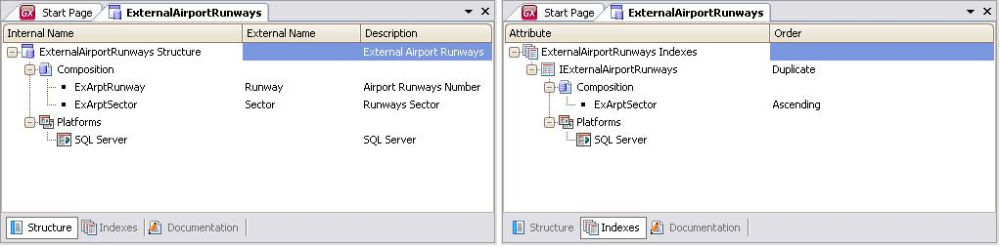
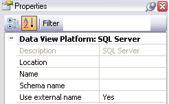

Describe the properties of an external (not managed by GeneXus) database file to make it accessible to GeneXus objects.  The Data View window has three selectors: Structure, Indexes and Documentation. The first two contain the information that needs to be specified in order to correctly define everything necessary to communicate with the external table. CompositionIt allows you to modify the structure of the data view, mapping internal and external attribute names. When working with GeneXus, you will only see the internal name as it will never reference the external one. If an internal table is associated to a Data View, the structure may be empty, that is, no attributes are defined. In this case, it is assumed that the structure of the Data View is equivalent to the associated table and that the indexes are also equal. This is called dynamic association. Thus, under the Composition node we will enter the external table attributes that we will work with (not necessarily all of them), and the mapping between the name we give them internally and the name given by the external table. Obviously, internal attributes will have to belong to the associated transaction structure. IndexesInternal indexes that GeneXus will use in the application. Suppose that the database where the "Runways" external table is located has an index called "RunwaysIndex" defined as a primary index over the Code attribute, which is the primary key of the table. To be able to access this index and use it from GeneXus, when we insert records through the AirportRunways transaction, checking for duplicates, we also have to define the mapping between the external name and an internal name for that index. In addition, we will have to specify where it is located, just like for the external table.
If we are defining the "ExternalAirportRunways" Data View and we want to enter the mapping for the "RunwaysIndex" index, pressing Enter over the Indexes node will open a sub-entry to enter the internal name that the index will receive, with the corresponding index type (Primary Key/Unique/Duplicate), its composition and name. After entering the internal name (IExternalAirportRunways), indicate that it is an index for the Primary Key that is made up exclusively of the "ExArptSector" attribute (internal name). Also, you need to enter its name and location within the external database. Again, as this will depend on the platform of each Environment, the specific values of the selected platform are specified under Platforms, as shown in the figure below:  See alsoData View Composition
|